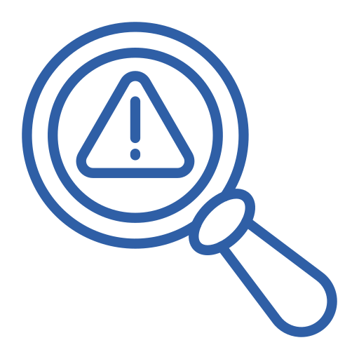
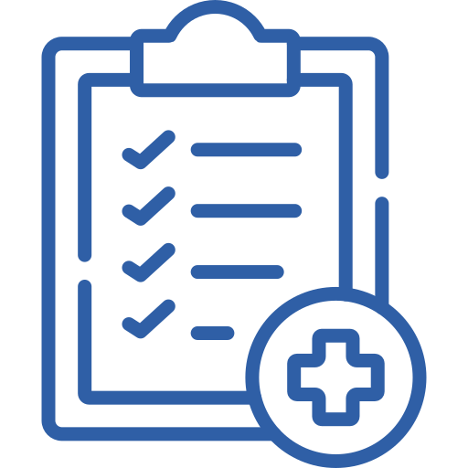

Paquete ginecología
Este paquete combina consulta médica, estudios diagnósticos y análisis especializados para brindar un seguimiento claro y personalizado.
Accede a consulta médica, estudios diagnósticos y seguimiento especializado en un solo paquete diseñado para tu tranquilidad y prevención.
Solicitar cita

Estudios preventivos y diagnósticos para mayor seguridad.

Profesionales capacitados en salud femenina y prevención.

Explicación sencilla y acompañamiento durante el proceso.
Agenda tu valoración
Comunícate con nuestro equipo y agenda tu atención de manera rápida y segura.